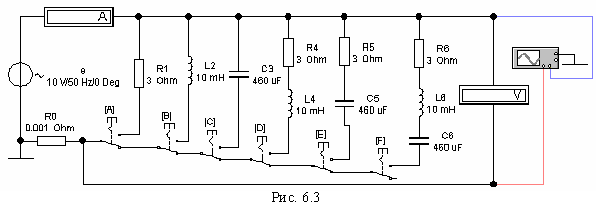

Задание 2. Собрать схему цепи (рис. 6.3) на рабочем поле программы EWB или на рабочем поле программы MS8 Education (либо открыть файл Lr6.ewb при выполнении работы в среде EWB или файл Lr6.ms8 при работе в среде MS8SD) и установить:
- красный цвет провода, подходящего к каналу А осциллографа, и синий для провода, подходящего к каналу В осциллографа;

- параметры пассивных элементов:
R0 = 1 мОм; R1 = R4 = R5 = R6 = int(120/N), Ом;
L2 = L4 = L6 = 100 - 2,5N, мГн; С3 = С5 = С6 = 100 + 10N, мкФ;
- параметры идеального источника синусоидального напряженияе е:
ЭДС Е = 10 В (действующее значение), f = 50 Гц; Ψu = 0;
- режим работы АС амперметра и вольтметра; сопротивление амперметра 1 мОм; сопротивление вольтметра 1 МОм;
- чувствительность 2 мВ/дел (mV/div) канала А осциллографа, в котором регистрируется напряжение, снимаемое с резистора R0; чувствительность 5 B/дел (5 V/div) канала В, в котором регистрируется напряжение ветви; длительность развертки (TIME BASE) в режиме Y/T - 2 мс/дел (2 ms/div);
- управляющие ключами А, В, С, D, E и F кнопки А, В, C, D, E и F клавиатуры.